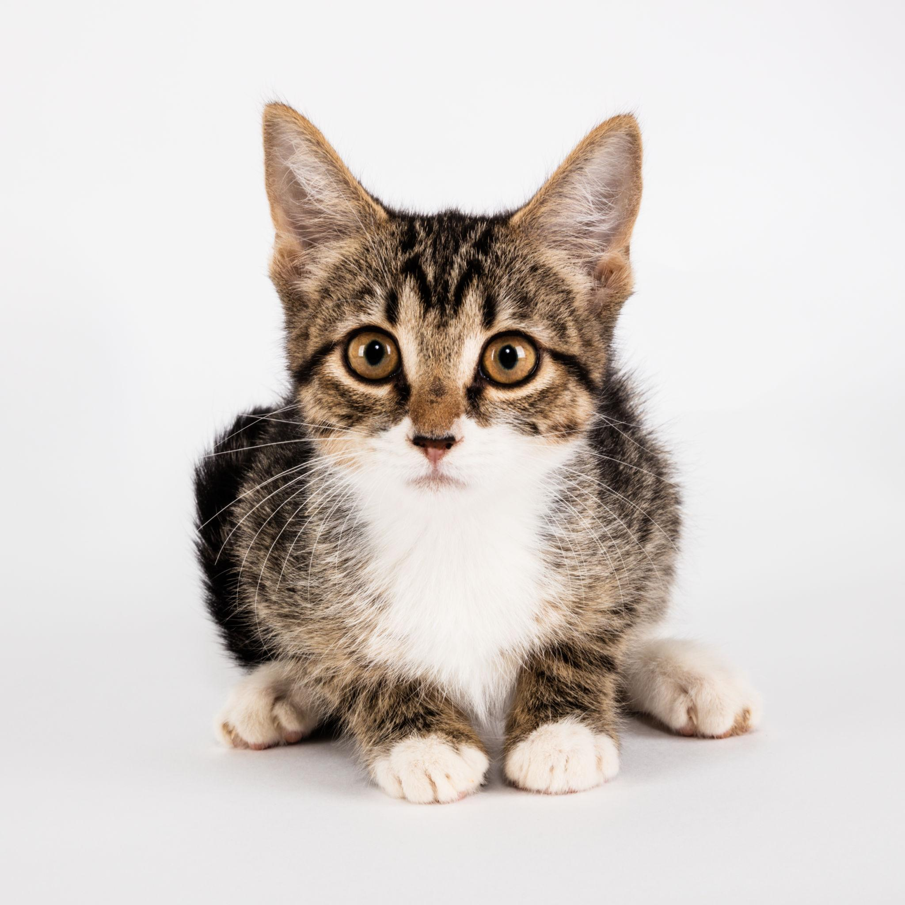
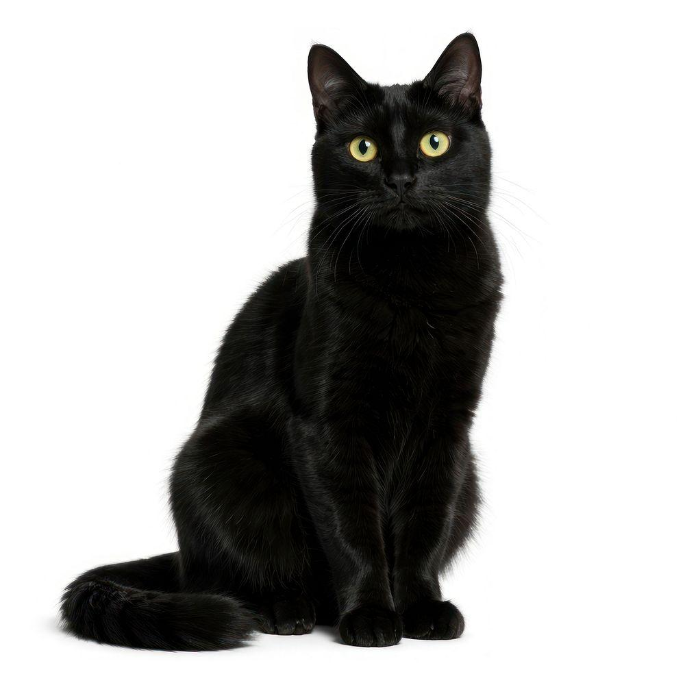

Kediler, insanlarla uzun yıllardır birlikte yaşayan evcil hayvanlardır. Sevimli görünümleri, meraklı davranışları ve bağımsız karakterleriyle tanınırlar. Hem evlerde hem de doğal yaşam alanlarında karşılaşabileceğimiz kediler, farklı özelliklere sahip birçok türe ayrılır.
1-Kedilerin Fiziksel Ozellikleri